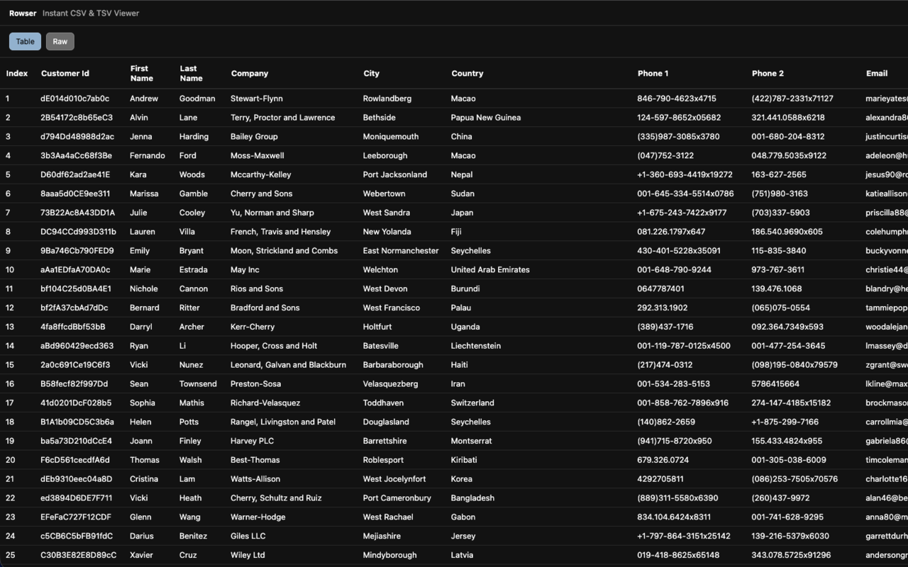

Table mode
Search globally, sort a column, and move through SQL-backed pages.
Instant CSV & TSV Viewer
Open CSV and TSV documents in Chromium-based browsers as searchable, sortable tables without uploading files anywhere.
Rowser catches eligible top-level CSV and TSV navigations, opens them in its own viewer, and keeps the raw source one click away.
Built for browser-first data inspection
Search globally, sort a column, and move through SQL-backed pages.
Switch back to the original text without refetching the document.
Open files from the viewer or drop them into the page for quick checks.
See clear decisions for oversized sources before the browser gets buried.
Screenshot

Privacy
Rowser processes CSV and TSV data in your browser. It has no accounts, telemetry, cloud sync, or Rowser-controlled backend.